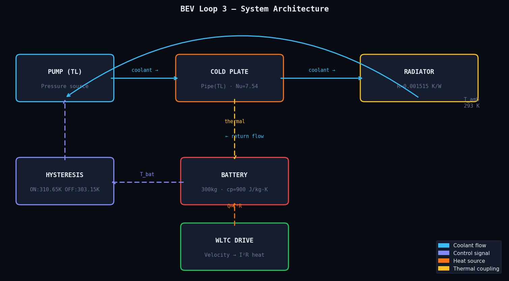
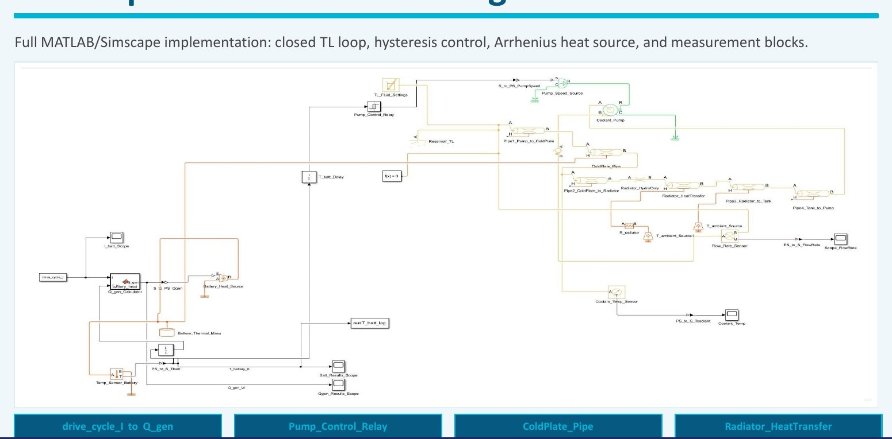
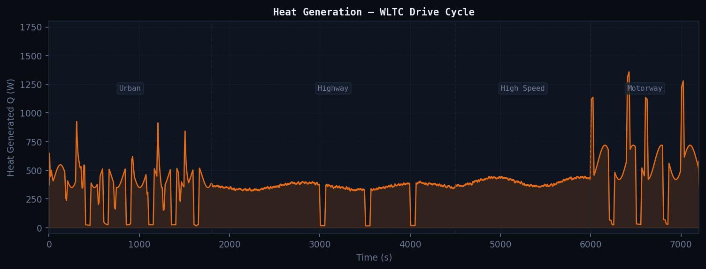
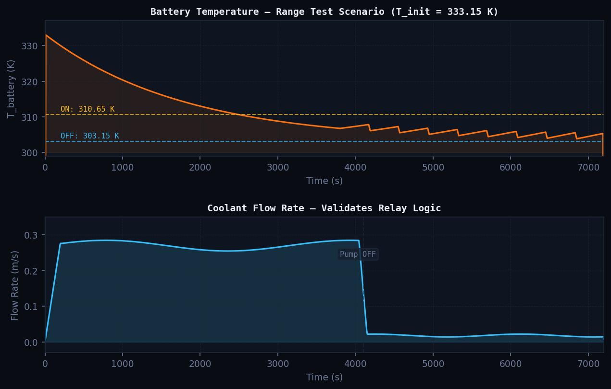
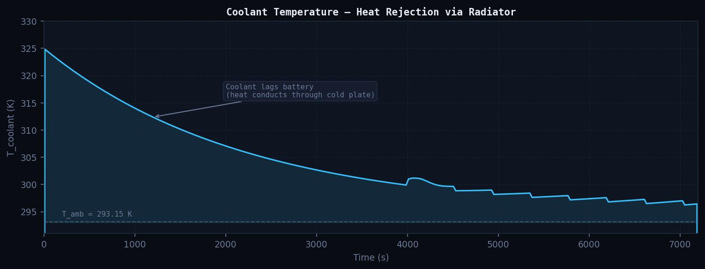

A full Simscape replication of the Chalmers/Volvo BEV Loop 3 closed-loop battery cooling circuit, validated against Dinakar & Rajeeve (2016). Now extended into independent research targeting PID control, dynamic Nusselt number, and multi-cell modelling.


| Parameter | Value | Notes |
|---|---|---|
| Battery mass | 300 kg | Lumped capacitance |
| Specific heat cp | 900 J/kg·K | Li-ion pack |
| Nusselt number | Nu = 7.54 | Parallel plate, laminar, uniform flux |
| Radiator resistance | 0.001515 K/W | Fixed — from Dinakar & Rajeeve |
| Pump ON threshold | 310.65 K | Relay switches pump on |
| Pump OFF threshold | 303.15 K | Relay switches pump off |
| Init temperature | 333.15 K | T_max — range test scenario |
| Ambient temperature | 293.15 K | Held constant |
| Coolant | 50/50 EG/water | From reference paper |
| Drive cycle | WLTC | 4-phase, velocity → I²R |


